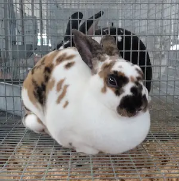

Highlights
-Super plush, velvety fur
-Not giant, but still a large breed (about 10lbs)
-Primarily farmed for their fur
More Information
Rex rabbits originated in the early 1900s in France. In 1924, they were shown off at the Paris International Rabbit Show where they gained recognition for their unique fur texture. Soon after, they were imported to the United States and other countries for fur production. They are known for their distinctive plush, velvety fur and are a popular breed for both pets and fur production. Their unique fur is a result of a genetic mutation that makes their hair stand up straight and their guard hairs shortened to the length of their undercoat. Their fur is also used commercially in the production of felt. As pets, they are generally docile.